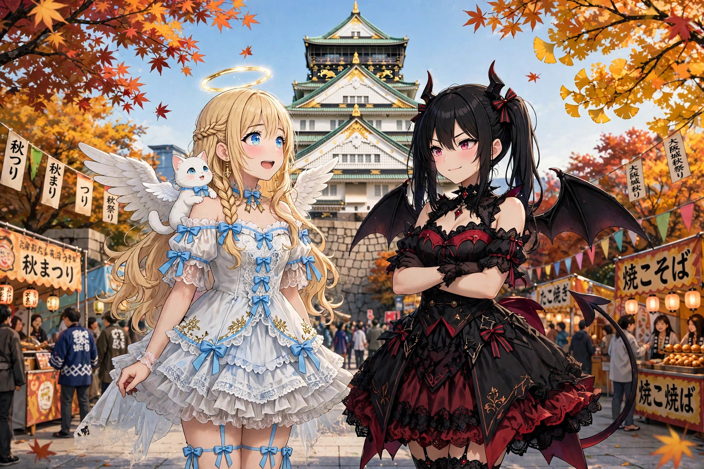
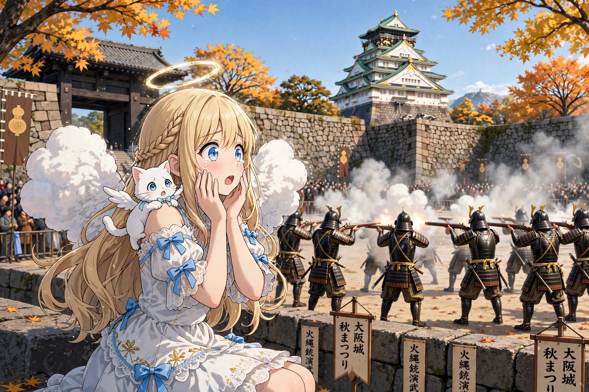
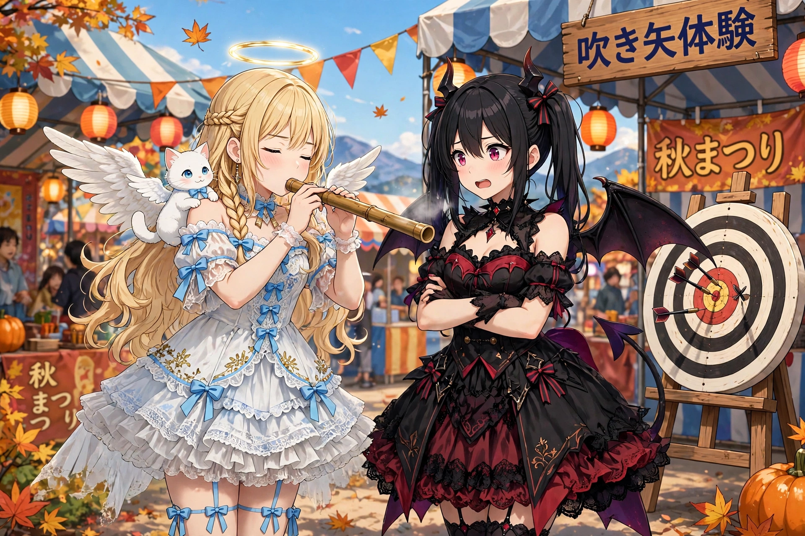
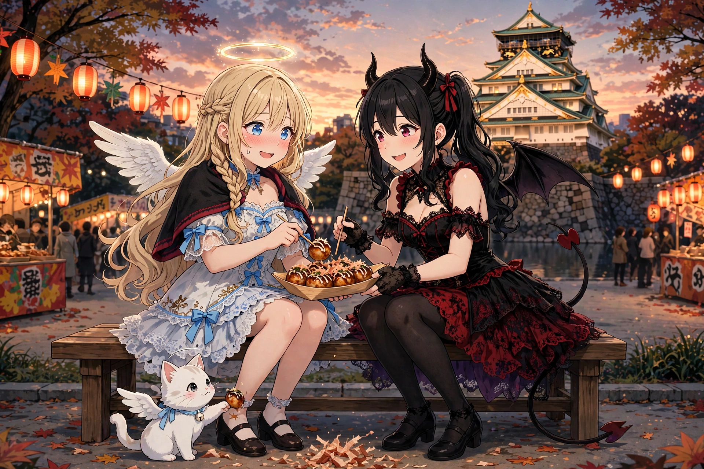

読み切り短編『どん、と鳴って、ぷっと飛んで』を公開しました
2026年11月8日
読み切り短編『どん、と鳴って、ぷっと飛んで』を公開しました。ルチアと大阪城の秋まつりへ行った日のお話です。火縄銃の演武と、吹き矢の体験が待っていました。
1. 天守閣の下の、秋まつり

「セラフィナ、見て。あのお城、すごくない」
大阪城の天守閣を見上げて、ルチアが言いました。秋晴れの空に、白と緑と金の天守閣。わたしも思わず見とれてしまいます。
「フィレンツェにもお城はありましたけど……日本の、お城は、初めてです」
「あたしもよ。悪魔のくせに、こっちの歴史には疎くてね」
今日は秋まつり。本丸広場には屋台が並んで、家族連れや観光客でいっぱいです。モコはわたしの肩の上で、焼きそばの匂いに鼻をひくひくさせていました。だめですよ、モコ。あとで、ちゃんとごはんを買ってあげますからね。
広場の一角では、甲冑姿の鉄砲隊の皆さんが、演武の準備をしていました。長い火縄銃を手に、きびきびと隊列を整えています。
「あれ、火縄銃じゃない。……あんたの時代の武器でしょ」
「はい。わたしがフィレンツェにいた頃と、同じ頃の……」
種子島に鉄砲が伝わったのは、1543年。わたしが前回地上にいた頃と、ちょうど重なります。五百年の時を越えて、同じ武器が、今はお祭りの演武として大切に受け継がれている。それって、すごいことだと思うのです。
2. どん、と鳴って

「放てーっ！」
号令とともに、どん、と大きな音が腹の底に響きました。
「わっ……！」
びっくりして、背中の翼がぼふっと膨らんでしまいました。白い煙がもくもくと広がって、火薬の匂いが鼻をかすめます。モコは肩の上で小さく震えていて、ルチアは……笑っていました。
「あはは、あんた、翼、まんまるになってる」
「も、もう。笑わないでください……。でも、すごい迫力でした」
一斉に撃つ音の大きさもさることながら、わたしが心を打たれたのは、その所作の美しさでした。火縄を整え、銃を構え、撃ち、また整える。一つひとつの動きに無駄がなくて、まるで型の稽古のようです。戦いのための技術が、五百年経って、見せるための芸として磨かれている。
「……悪魔のあたしが言うのも変だけどさ。武器って、本当は、こうやって平和に使われるのが一番いいのよね」
「ルチア……」
「な、なんでもない。次、行くわよ。あんた、吹き矢の体験、行きたいって言ってたじゃない」
3. ぷっ、と飛んで

広場の体験コーナーでは、吹き矢ができました。長い筒を口に当てて、息で矢を飛ばし、的に当てるのだそうです。
「見本、見せてあげる」
係の方が、ぷっと一吹き。矢はすっと飛んで、的の真ん中近くに、すぱっと刺さりました。簡単そうに見えます。
「じゃあ、わたしも……ふーっ」
……ぽとり。矢は、的の手前で力なく落ちました。
「あははは！ あんた、優しすぎなのよ。息に遠慮が出てる」
「うぅ……天使の息は、そよ風なのです……」
言い訳をしながら、二本目。今度は力いっぱい吹きました。……今度は勢いがつきすぎて、的の上を大きく越えていきました。
「力任せもだめ、っと。……ほら、深呼吸して。的に当てるんじゃなくて、息を真っ直ぐ届ける感じ」
悪魔に、呼吸の指導をされる天使。三本目、わたしは目を閉じて、深く息を吸いました。祈るときのように、心を静かに。ぷっ、と一吹き。
すぱっ。矢は、的の真ん中の少し横に、きれいに刺さりました。
「当たった……！ ルチア、当たりました！」
「はいはい。……まあ、悪くなかったんじゃない」
ルチアも一本だけ吹かせてもらいました。……ど真ん中でした。悔しい。でも、楽しかったです。
4. 平和な時代の、武器

帰り道、夕日の大阪城を背に、わたしたちは屋台のたこ焼きを分け合いました。モコには、かつお節のところを少しだけ。
「今日の武器は、どっちも誰も傷つけなかったですね」
「当たり前じゃない。お祭りだもの」
「五百年前は、あれで人が戦っていたのに。今は、音に驚いて、的に当てて、笑って帰れる。……平和な時代って、いいですね」
ルチアはたこ焼きをほおばりながら、少しだけ笑いました。
「あんたさ、吹き矢の才能、あると思うわよ。天使、辞めて忍者になれば？」
「辞めません。……でも、また来年も、吹きに来たいです」
どん、と鳴って、ぷっ、と飛んで。秋まつりの一日は、笑い声の中で暮れていきました。
（了）